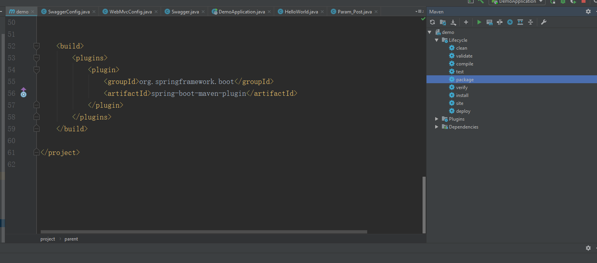
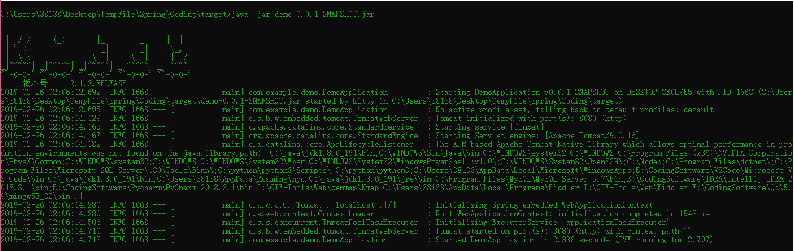
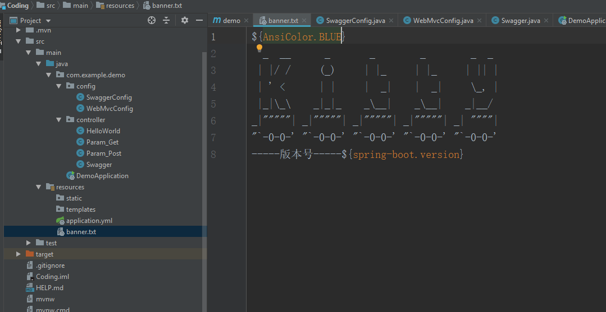
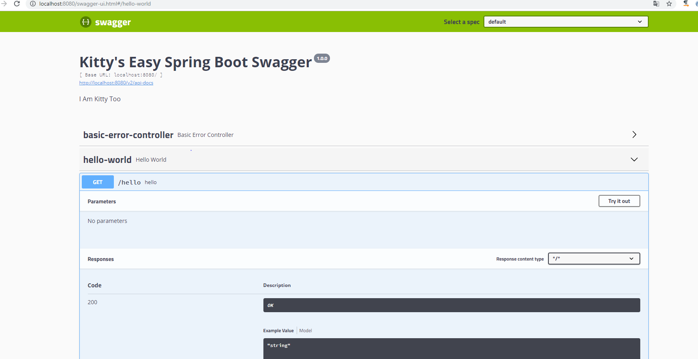
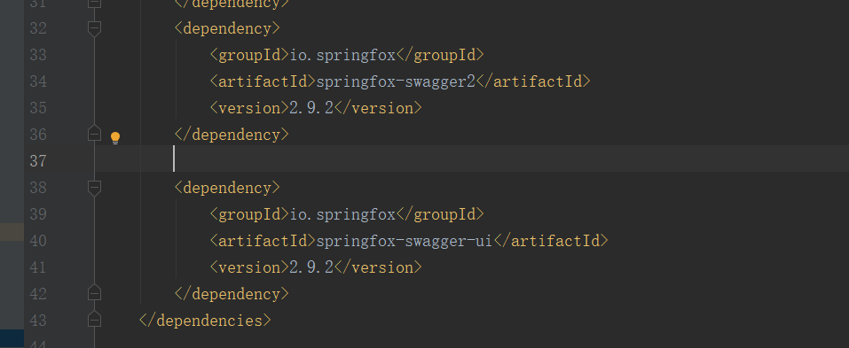
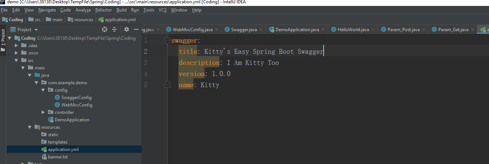
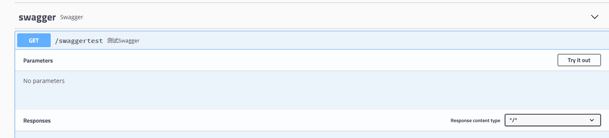

一、打包：当初spring的项目一般是在服务器开Tomcat容器，然后再启动脚本运行，或者在IDE内运行，而有个方便的maven插件，利用idea打包，生成的jar包，可以使用java -jar xxx.jar启动，这就很舒服了

在pom/xml文件引用插件
<build>
<plugins>
<plugin>
<groupId>org.springframework.boot</groupId>
<artifactId>spring-boot-maven-plugin</artifactId>
</plugin>
</plugins>
</build>然后在IDEA右边的maven中双击package，将会实现自动打包，终端会告诉你jar包的地址
运行的效果图：

二、不知道你有没有发现我启动后一个闷骚的Kitty艺术字,而你只有一个Spring呢，换字(Banner文件)
在resources目录下创建banner.txt文件，添加以下内容
可以更换成你自己的banner.txt

艺术字传送门${AnsiColor.BLUE} 表示Banner文字的颜色${spring-boot.version}当前使用的SpringBoot版本
再次启动，托马斯小火车就开起来了
三、swagger的集成：对于前后端分离的项目而言，如果前后端不是一个人做，那么没有swagger的后端是没有灵魂的，所以刚学spring boot就想看一看能不能完美接入一个swagger。效果图：
代码地址：https://github.com/Kit4y/Spring-Boot2-Demo

具体步骤：
3.1、添加依赖，在pom.xml中添加这几行，然后会弹出一个选项是否maven自动导入jar包，点确定就行

3.2、添加配置，结构如图（最好是去看代码）

1、resource/application.yml（你可能文件后缀名不是这个，可以自己改）
swagger:
title: Kitty's Easy Spring Boot Swagger
description: I Am Kitty Too
version: 1.0.0
name: Kitty主要是swagger面板上的描述，问题不大
2、config/SwaggerConfig
package com.example.demo.config;
@Configuration
@EnableWebMvc
@EnableSwagger2
@ComponentScan(basePackages = {"com.example.demo.controller"})
@Component
@ConfigurationProperties(prefix = "swagger")
@Data
public class SwaggerConfig {
private String title;
private String description;
private String version;
private String name;
private String url;
private String email;
@Bean
public Docket customDocket() {
return new Docket(DocumentationType.SWAGGER_2).apiInfo(apiInfo());
}
private ApiInfo apiInfo() {
Contact contact = new Contact(name, url, email);
return new ApiInfoBuilder()
.title(title)
.description(description)
.contact(contact)
.version(version)
.build();
}
}
这里面有个@Data依赖于
<dependency>
<groupId>org.projectlombok</groupId>
<artifactId>lombok</artifactId>
<version>1.18.6</version>
<scope>provided</scope>
</dependency>3、WebMvcConfig主要是过滤网页静态资源
package com.example.demo.config;
@Configuration
class WebMvcConfig implements WebMvcConfigurer {
public void addResourceHandlers(ResourceHandlerRegistry registry) {
registry.addResourceHandler("swagger-ui.html")
.addResourceLocations("classpath:/META-INF/resources/");
registry.addResourceHandler("/webjars/**")
.addResourceLocations("classpath:/META-INF/resources/webjars/");
}
}
然后访问http://localhost:8080/swagger-ui.html即可
ps:你可以在函数前面多加一个修饰器对swagger将会多一些描述
比如
public class Swagger {
@GetMapping("/swaggertest")
@ApiOperation(value = "测试Swagger") //添加这个 在swagger上展示
public String hello(){
return "hello SpringBoot-swagger";
}
}